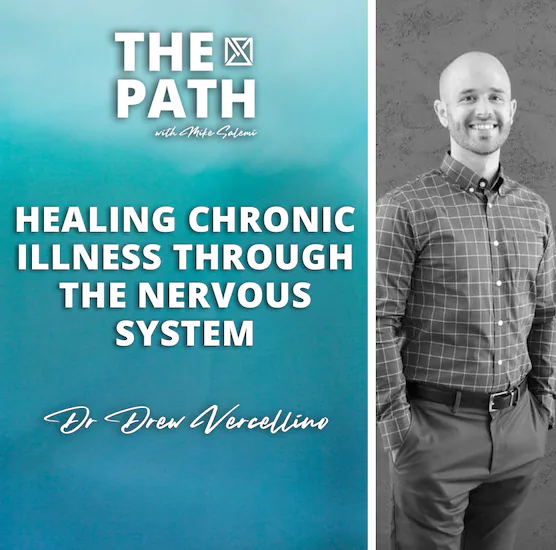

B886 · Healing Chronic Illness Through the Nervous System
Hi {first_name},
Today on the show we are joined by Dr. Drew Vercellino. Dr. Drew is a chiropractor that specializes in upper cervical care. After struggling with his own chronic pain with seemingly no resolution, he found upper cervical care and it changed his life. In this episode, we go deep into what that looks like, the history of chiropractic, the role of the nervous system in healing, and why it seems like some people heal and others don’t.
In Episode #27 of The Path Podcast, Drew and I discuss:
 Click here to listen on Apple.
Click here to listen on Spotify. Yours in Health, Mike
P.S. Please take 5 minutes to complete this short survey linked below. This will help me identify which guests and new content to create based on what you want to see most. Click here to complete this quick survey. Thank you! |